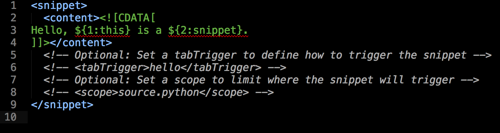
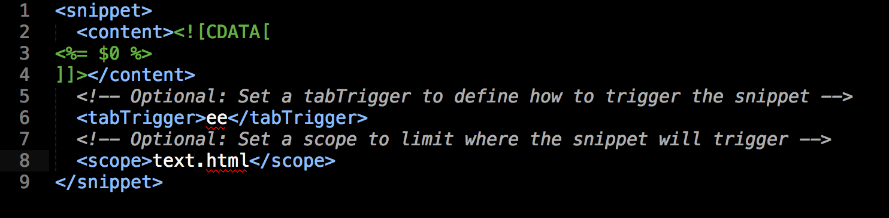

TROYleachBlog
Shave seconds, with Snippets...
If you are cutting & pasting any HTML, CSS, Ruby, or Rails code, or better yet typing the same code over... and over... and over.... - STOP, take a breath and read on!
In the words to follow I will show you how to make snippets in sublime text 2/3. When I first heard about snippets and pulled up the file it looked really intimidating. Being a newbie coder I didn't want to mess anything up or god for bid 'wreck' my computer! When you first bring up the code it might look a little intimidating but trust me, this is easy and will save you tons of seconds, seconds that you will never get back otherwise!
Snippets are nothing more than predefined code blocks that you can set up. Once the code block is set up you type the desired key binding and boom... the code is there with the cursor placed precisely where you want. Lets look at some code.
Example, <%= %> How many times are we going to type this bit of code? A LOT! Wouldn't it be nice if we could just type a single key, hit the tab key and BAM.. it was there with the cursor in the middle.
Lets get coding and see how we might accomplish this!
Create:
To create your first snippet in sublime do the following: Go to tools > New Snippet. A new untitled file will open that should contain something similar to the following:

First thing, see the code Hello, ${1:this} is a ${2:snippet}. with in the tags content replace that code with your desired code. In my case it is <%= %>.
Example:
[CDATA[ <- YOUR CODE BETWEEN THE BRACKETS -> ]]
Notice the $0 that is where you want the cursor to go when you you first expand your snippet. If you have a large code block you might want to have your cursor jump from spot to spot, in order, $0 first spot, then $1 for the next spot, and so on. After you have typed in the desired text hit the tab key again and the cursor will jump to the next spot.. Magic...
Are you wondering what this means? the ${1:this} and ${2:snippet}? Go ahead, pull a untitled file, save it as test.sublime-snippet. Pull up a doc, change the extension to HTML type in hello and hit tab. Go on, I will wait.... did you see what happened, 'this', and 'snippet' are defaults, the 1 is the where the cursor will start, the 2 two is the next position.. Pretty cool huh?? Magic..
Next you will see some code that is commented out. Uncomment the tabTrigger tags. Here you will replace the hello (or what ever it says) with whatever key binding you want. I used 'ee', why? why not? The only 'Got Ya' here is that you need to make sure that the key binding doesn't already exist. For me, the easiest way is to go into sublime and type the key I want to use and hit tab, if nothing happens I'm pretty sure your safe in using that particular key.
Last, the scope, which determines the kinds of files (HTML, CSS, PHP, shell script) in which the expansion takes place. Again get rid of the commented line describing the scope and type text.html. Your file should look something like this:
Save:
File name: The file must end with .sublime-snippet, like this: bee.sublime-snippet. What goes in front of .sublime-snippet is up to you.
Where to save it. When you press save, Sublime should automatically try and save the file in the right folder:
Mac OS X: /Users/yourname/Library/Application Support/Sublime Text 2/Packages/User
Test:
Now for the fun. Open up Sublime, change the extension (lower right hand side of the window) to HTML, type in your key binding press tab.. and watch the magic.
More info:
For more info about Sublime Text's snippets, see the canonical source: Sublime Text Docs: Sinipeets